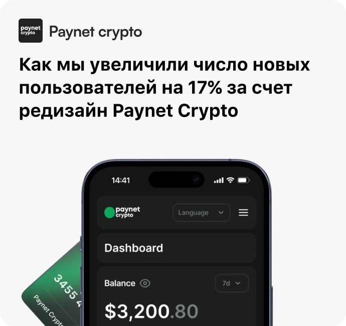
Как мы увеличили количество обменов на пользователя на 32%
Мои роли в продукте
- Product designer
- UX Researher
Что такое Paynet Crypto?
Paynet — крупнейшая платёжная система Узбекистана с 20+ млн пользователей и первой в стране лицензией на операции с криптовалютами. Платформа объединяет классические платежи, переводы и крипто-функционал: покупку, продажу, обмен и отправку криптовалют.
Какие задачи стояли передо мной?
- Увеличить количество транзакций на пользователя в неделю на 20–25%
- Повысить завершаемость флоу обмена на 8–12 п.п
- Уменьшить нагрузку на поддержку на 18–20%
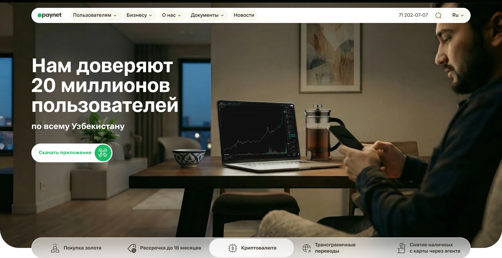
Результаты, которых удалось достичь
+32% обменов на пользователя в неделю
+11 п.п к конверсии флоу обмена (с 54% до 65%)
−27% обращений в поддержку
Определение проблемы
К нам пришёл менеджер продукта и обозначил проблемные места. Крипто-направление Paynet запустили, пользователи регистрируются и пополняют счёт, но дальше — тишина. Активность ниже ожиданий, а поддержка завалена однотипными вопросами.
Менеджер выделил три зоны:
- Люди заходят, смотрят баланс и уходят. Обменов на пользователя мало, поэтому платформа генерирует мало прибыли так как основной доход приход с комиссий за операции
- Пользователи начинают обмен, но многие не доходят до конца, это также негативно влияет на заработок компании
- Отправка и получение крипты — много ошибок и обращений в поддержку, пользователи не разбираются в комиссиях и сетях. Из-за слишком большого количество обращений поддержка не справляется поэтому приходится нанимать больше работников и повышаются расходы
Дальше мы начали разбираться сами — что конкретно не так и где именно спотыкаются пользователи
Анализ данных
Данные показали следущее:
Опираясь на эти данные, мы поняли: проблема обмена — не в создании операции, а в прозрачности процесса. А низкая активность на главном экране связана не с нехваткой данных, а с отсутствием рекомендаций
Фидбэк от юзеров
Далее мы решили обратиться в службу поддержки и узнать топ проблем с которыми приходят юзеры
Из фидбэка мы выявили следущее
- 01 Итоговая сумма обмена отличалась от ожиданий. Причина — скрытый slippage: допустимое отклонение цены было установлено автоматически на 0.5%, но в интерфейсе об этом не было ни слова. Пользователь видел одну сумму, получал другую — и не понимал почему.
- 02 Пользователи часто жаловались, что не понимают сколько заплатят за отправку крипты — комиссия за перевод отображалась только на финальном экране. Часть пользователей доходила до конца, видела неожиданно высокую сумму и закрывала окно
- 03 Ещё одним из частых обращений был вопрос о выборе сети при получении крипты. Пользователи видели список сетей (ERC–20, TRC–20, BEP-20) и не понимали: какая дешевле, какая быстрее, какую рекомендовать отправителю
Отзовы пользоватлей подтверждают статистические данные:
- Пользователи раздражены скрытым slippage — получают меньше ожидаемого без объяснения
- Пользователи узнают о комиссии отправки слишком поздно
- Пользователи не понимают какую сеть выбрать при получении
UX тест текущей версии
Мы провели модерируемый юзабилити-тест на 8 респондентах
Гипотезы — пользователь поймёт:
- Как обменять один актив на другой и по какому курсу
- Сколько стоит отправка крипты и где это посмотреть
- Какую сеть выбрать для получения крипты и почему
- Что ему делать после просмотра главного экрана
Сценарии и задания:
- Ты хочешь обменять свой Bitcoin на USD. Пройди весь процесс. Перед подтверждением — скажи, по какому курсу произойдёт обмен и сколько ты получишь
- Отправь 0.1 ETH другу по указанному адресу. Скажи, сколько будет стоить отправка, до того как нажмёшь «Подтвердить»
- Друг хочет прислать тебе USDT. Сгенерируй адрес для получения. Какую сеть выберешь? Объясни почему
- Посмотри на главный экран. Есть ли что‑то, что подсказывает тебе какое действие совершить? Что бы ты сделал дальше?
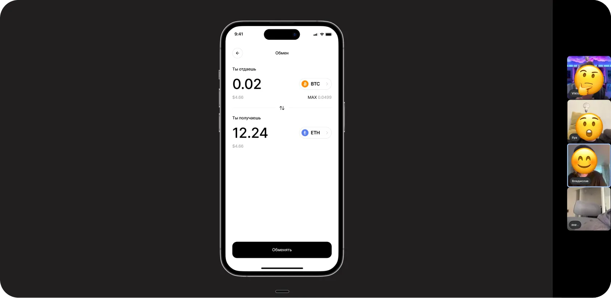
Результаты тестирования
По обмену: 6 из 8 не смогли назвать курс
Все 8 респондентов пытались найти комиссию до подтверждения — возвращались на предыдущие экраны. Никто не нашёл: комиссия появлялась только на финальном экране.
По получению: 6 из 8 не объяснили чем сети отличаются
По главному экрану: 1 из 8 назвал конкретное действие
Составление гипотез
Гипотеза № 1 — Обменный курс на экране ввода суммы
Мы предполагаем, что добавление обменного курса на экран ввода суммы увеличит долю пользователей, нажимающих «Продолжить», на 8–12 п.п, потому что решит проблему «не вижу по какому курсу обмениваю»
Экран до изменений
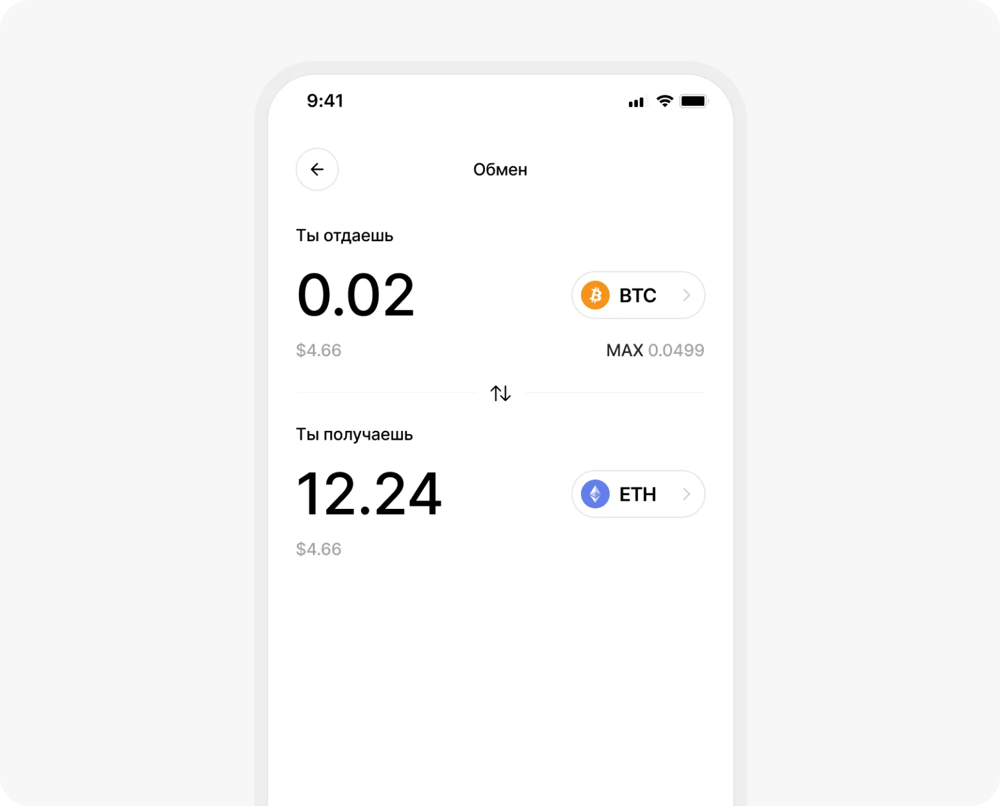
Гипотеза № 2 — Настраиваемый slippage tolerance
Мы предполагаем, что добавление настройки допустимого отклонения цены (slippage) с понятным объяснением снизит количество обращений в поддержку по теме «получил меньше чем ожидал» на 30–40% и повысит повторные обмены, потому что решит проблему скрытого slippage — сейчас он установлен автоматически на 0.5%, пользователь об этом не знает и удивляется итоговой сумме
Гипотеза № 3 — Отображение комиссии отправки до последнего шага
Мы предполагаем, что показ комиссии сразу после ввода суммы отправки (а не на финальном экране) снизит количество пользователей, бросающих отправку, на 30–40%, потому что решит проблему «узнаю стоимость перевода слишком поздно»
Экран до изменений
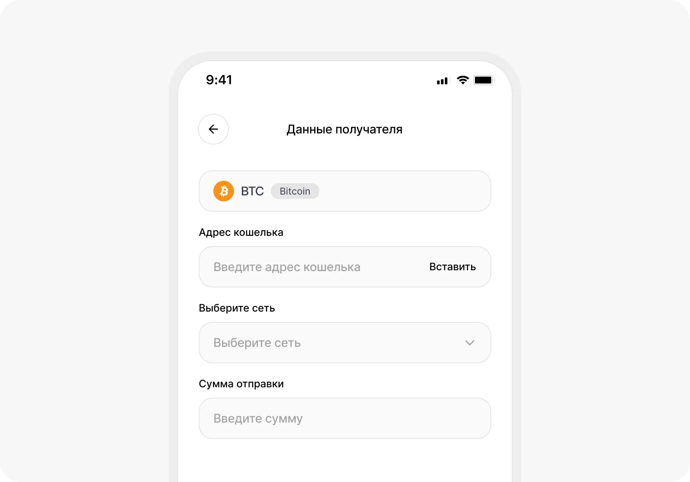
Гипотеза № 4 — Понятный выбор сети при получении
Мы предполагаем, что замена выпадающего списка сетей на карточки с комиссией, скоростью и рекомендацией снизит обращения в поддержку на 35–45%, потому что решит проблему «не понимаю чем сети отличаются и какую выбрать».
Экран до изменений
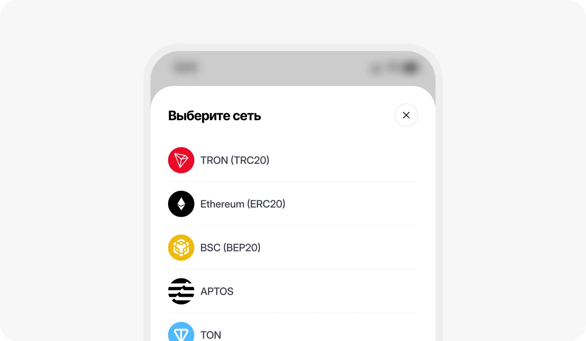
Гипотеза № 5 — AI подсказки
Мы предполагаем, что добавление AI-блока с персональными рекомендациями на главный экран увеличит количество обменов на пользователя в неделю на 25–30%, потому что решит проблему отсутствия рекомендаций
Экран до изменений
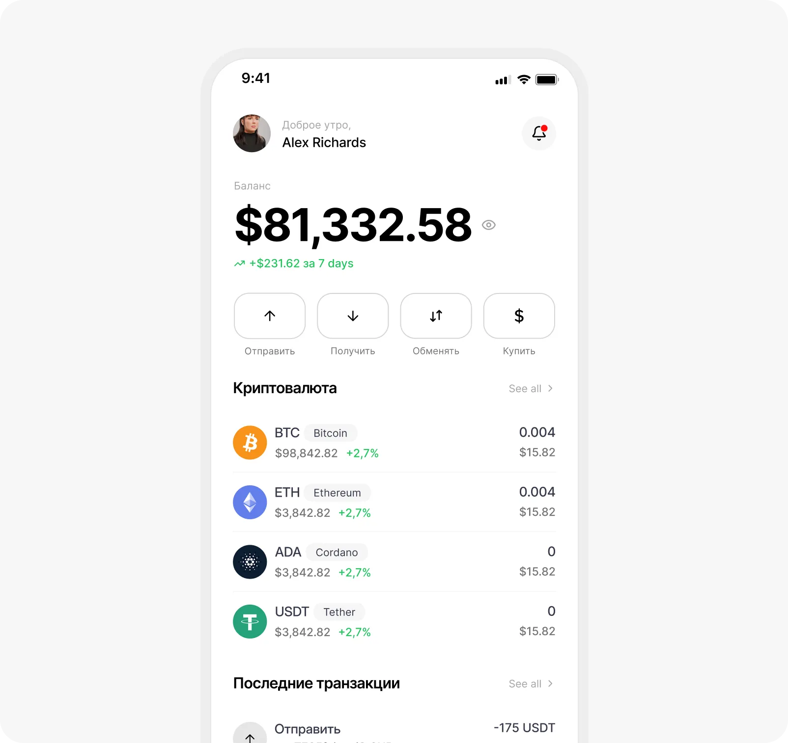
Приоритезация
Обсудил гипотезы с менеджером. Разделили на две итерации по сложности разработки
- Обменный курс на экране ввода
- Таймер фиксации цены
- Комиссия отправки до последнего шага
- Понятный выбор сети при получении
- AI-подсказки на главном экране
HI-FI дизайн
После скоупинга, я спроектировал UI-kit и приступил к проектированию.
Обменный курс
Перед тем как начать проектирование собственных макетов мы предварительно провели бенчмаркинг конкурентов в такой же нише. Мы опирались на топовых игроков рынка и выделив общий паттерн спроектировали своё решение
Бенчмаркинг конкурентов
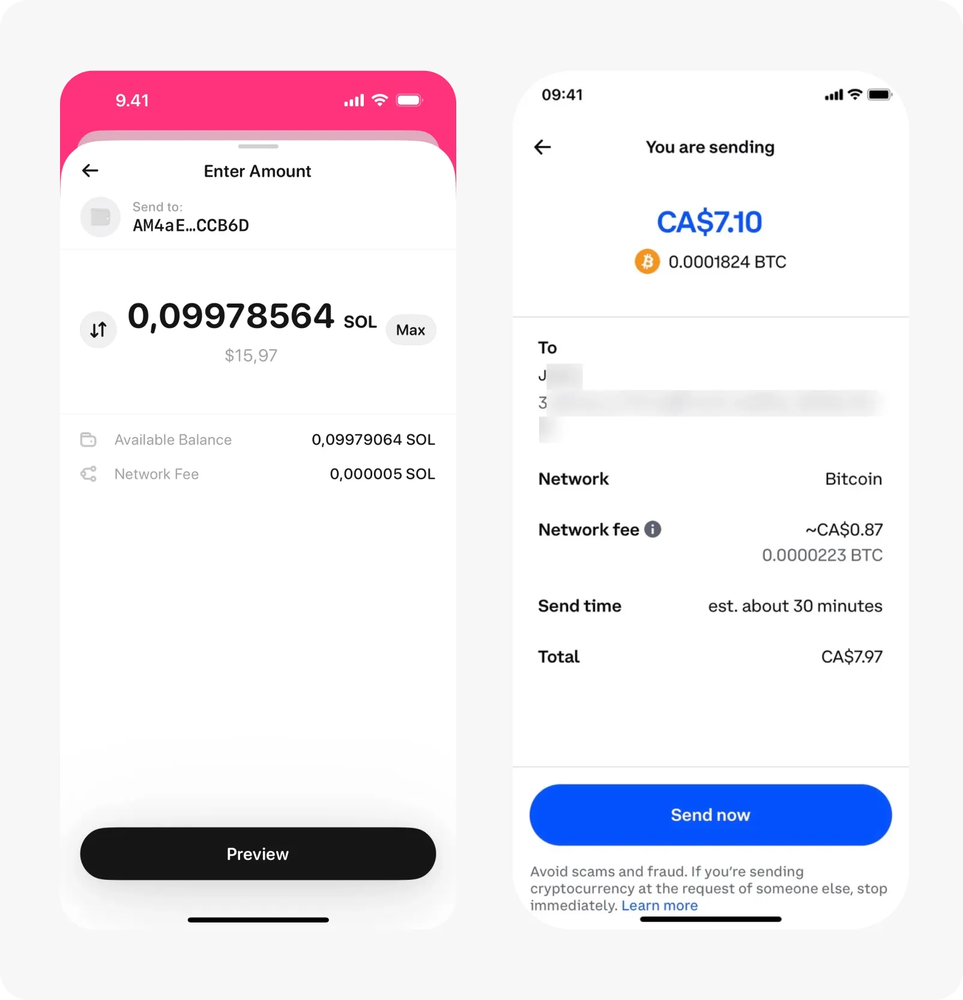
Мы решили создать минималистичный блок, показывающий все комиссии и указать итоговую стоимость отправки с учётом всех комиссий
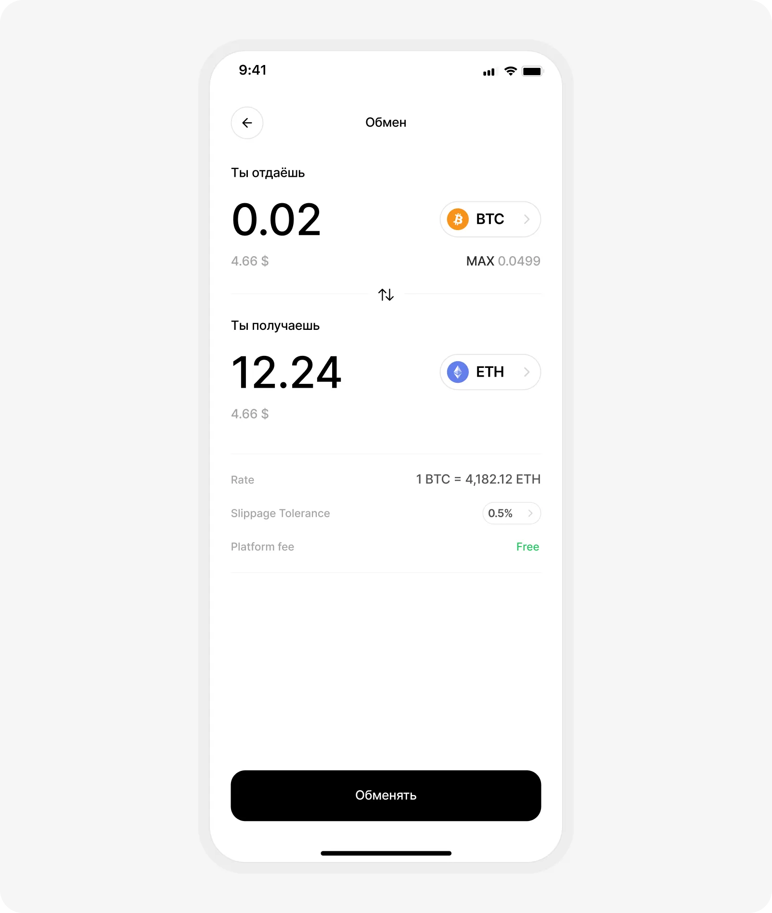
Настройка Slippage
В этой задаче мы также опирались на топовых конкурентов. Но главной задачей для нас было не просто скопировать решение, а спроектировать экран, который объяснит пользователю что такое slippage и позволит настроить его за минимальное количество шагов
Это важно, потому что аудитория Paynet — не проффесиональные трейдеры. Большинство слышат слово «slippage» впервые. Нужно было сделать так, чтобы пользователь понял суть за 5 секунд и выбрал нужное значение в один клик
Бенчмаркинг конкурентов
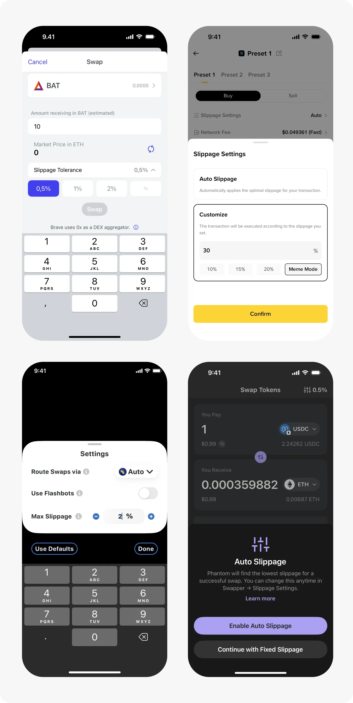
В итоге мы получили экран на котором двумя предложениями описано что такое Slippage и инпут в которое можно поместить значение
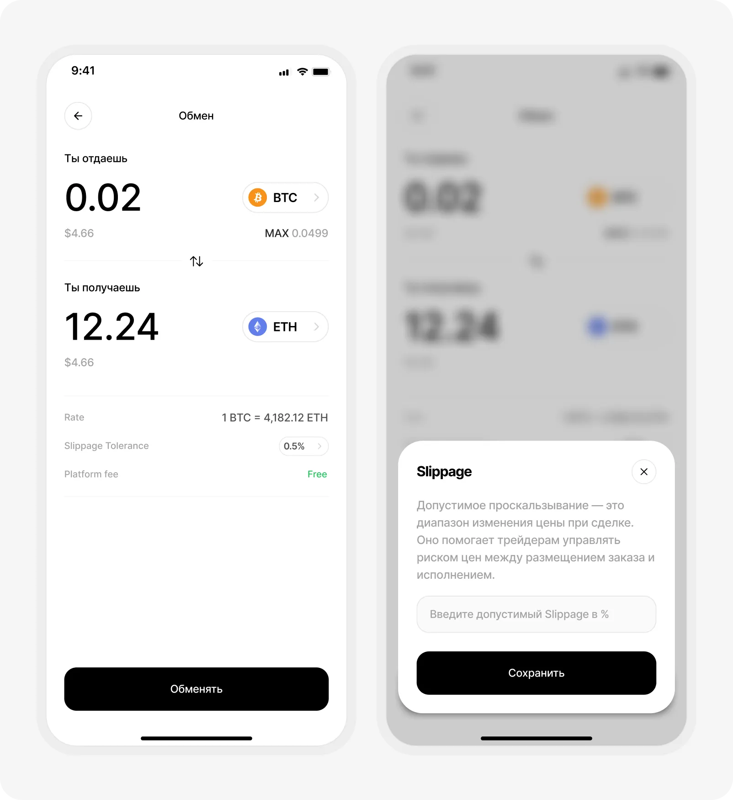
Проектирование отображения комиссии отправки
Задача: за минимальный объём экрана донести до пользователя итоговую стоимость отправки — без лишней когнитивной нагрузки. Человек должен сразу видеть сколько заплатит, ещё до того как дойдёт до подтверждения
Наше решение — это компактный блок под инпутами с комиссиями — чтобы пользователь всегда видел за что с него берётся комиссия и блок над кнопкой отправить, чтобы человек видел сколько в итоге он отправляет с учётом всех комиссий
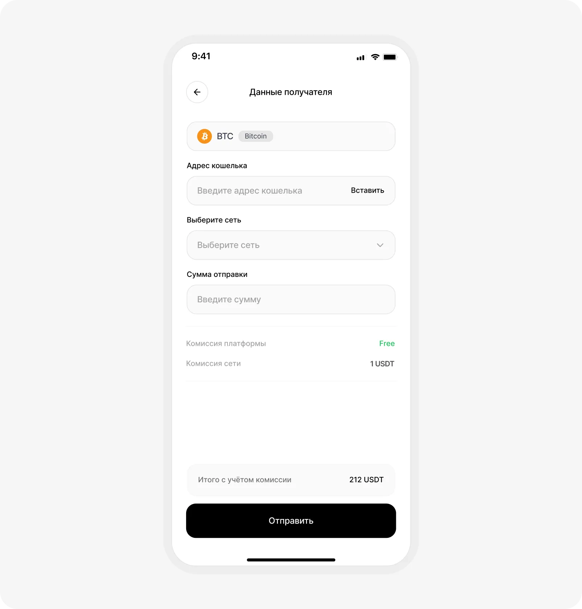
Проектирование выбора сети при получении
В данном случае мы хотели отобразить самую важную информацию для пользователя не нагружая его тем что ему не нужно, поэтому важно было определить а что именно пользователь хочет видеть. Чтобы это узнать мы запустили опросник на 300 человек в котором люди отмечали какой показатель для них самый важный
Опрос показал следущее:
Для 83% самым важным была скорость отправки
Для 14% самым важным было знать самую дешёвую сеть для отправки
Всего лишь 3% пользователей отметили другие показатели
Поэтому на экране в первой строке показываем самую дешёвую сеть для отправки чтобы юзеры которым важен этот показатель могли сразу же её выбрать, также у каждой сети появился показатель времени зачисления средств
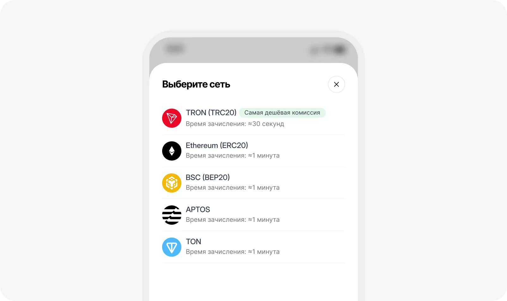
Решение — AI-подсказки на главном экране
Мы приступили к проектированию AI-рекомендаций. Готовых решений на рынке для этой задачи мы не нашли, поэтому проектировали с нуля — отталкиваясь от данных исследования и задач наших пользователей
Блок с рекомендациями расположили между балансом и таблицей активов. Система анализирует портфель пользователя, ситуацию на рынке и историю действий. До 5 рекомендаций в день, каждая с кнопкой действия
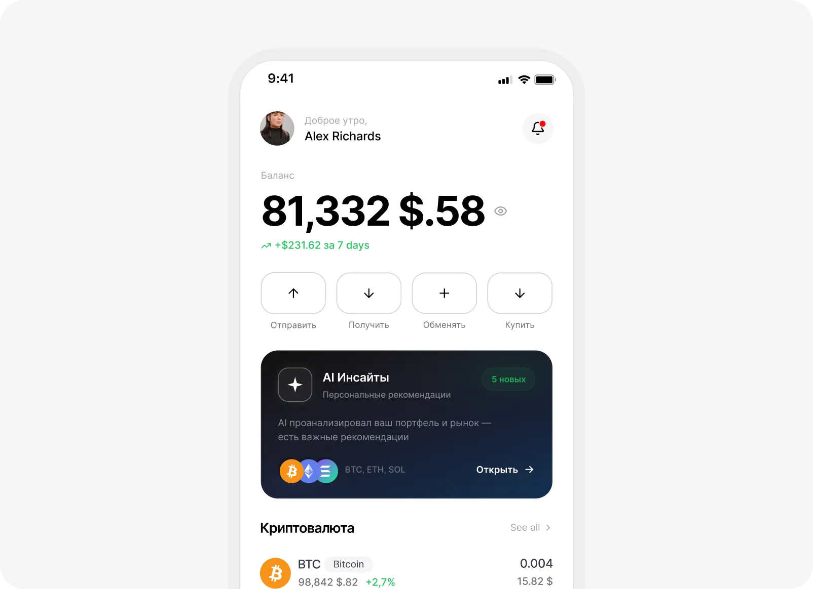
При реализации в команде возник спор по поводу подачи рекомендаций. Разделились на два мнения:
Вариант A — свайп-карточки на дашборде. Блок на главном экране, карточки перелистываются свайпом. Пользователь листает и видит следующую рекомендацию. Всё происходит на главном экране, без переходов.
Вариант B — отдельная страница со списком. На дашборде — компактный блок-превью с одной рекомендацией. При нажатии — открывается страница со всеми 5 рекомендациями в виде списка. Пользователь видит полную картину и выбирает.
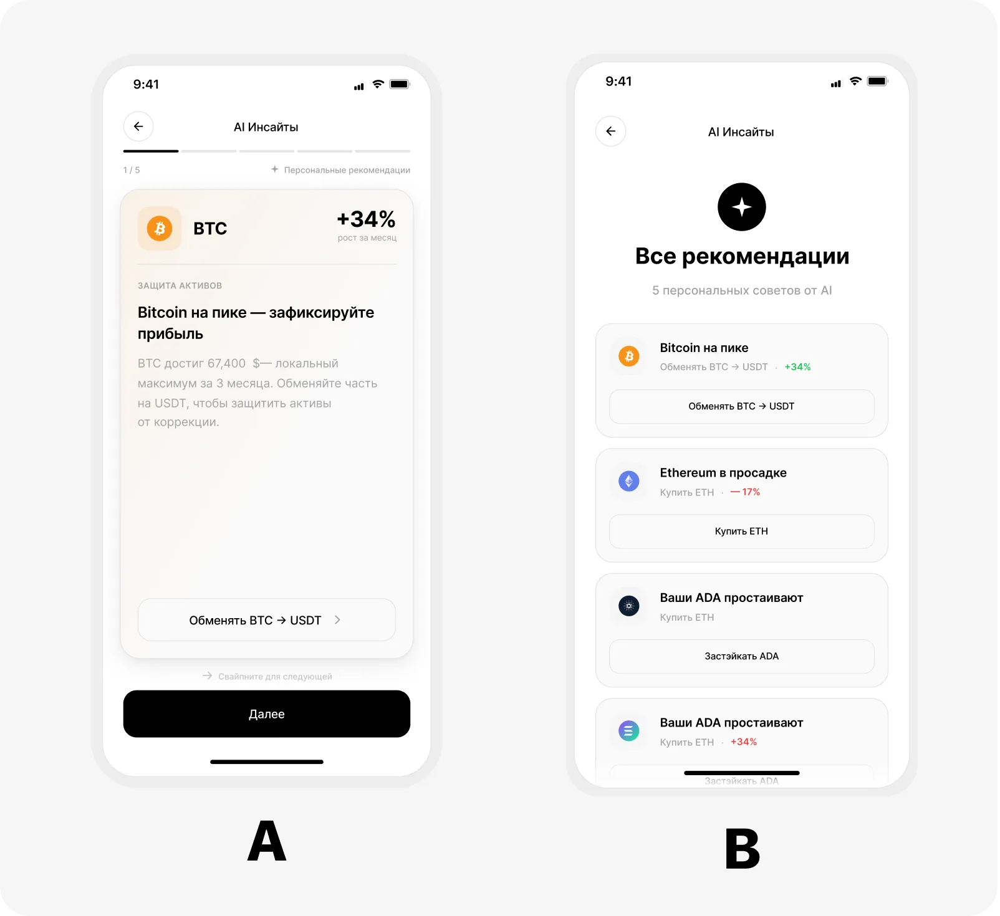
Валидация через A/B тест
Все спроектированные решения мы направили на A/B тестирование, чтобы проверить их эффективность на реальных пользователях. Решение с AI-подсказками, где мы не смогли определиться с форматом внутри команды, пошло в отдельный A/B/C тест — с двумя вариантами реализации. Это позволило нам оценить влияние каждого изменения на метрики и принять решения на основе данных, а не предположений
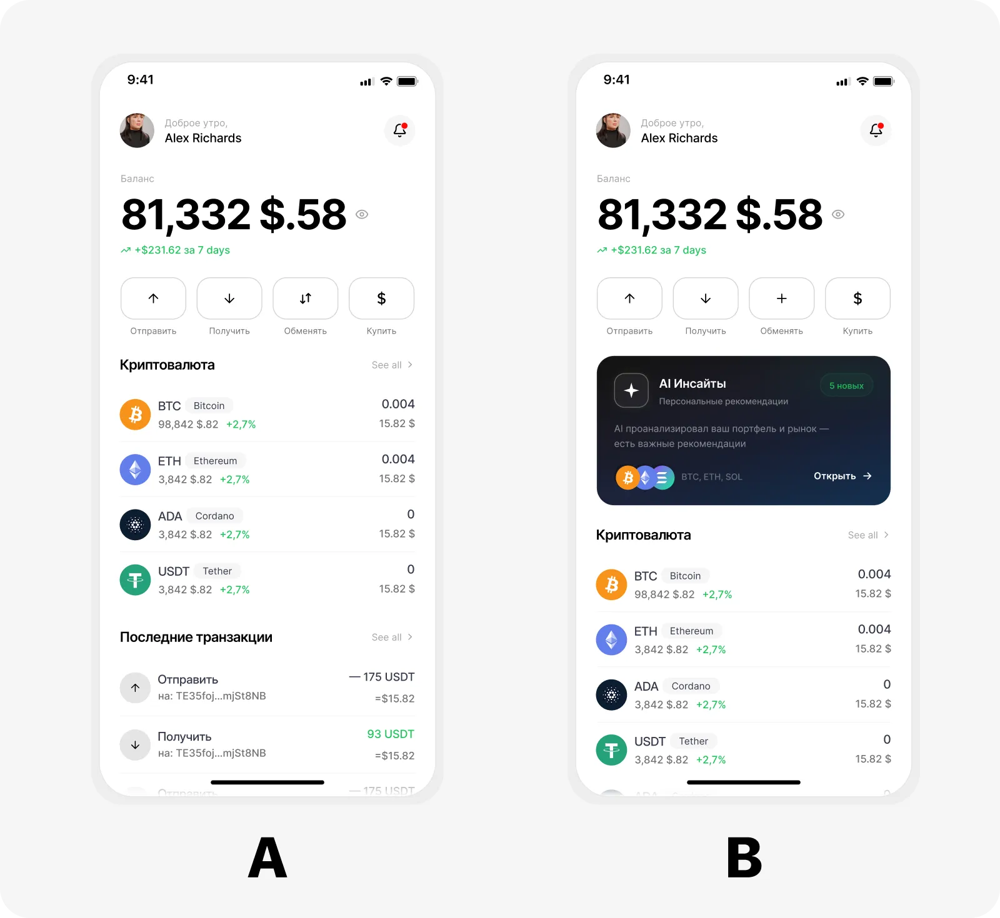
Результаты A/B теста
Конверсия флоу обмена выросла на 9п.п с 54% до 63%
Количество обращений в поддержку уменьшилось на 19%
Время на проведение транзакции уменьшилось на 12% с ≈61 секунды до ≈53 секунд
Помимо основных метрик, мы также замерили дополнительный показатель по флоу отправки — среднее время на совершение транзакции. Оно сократилось на 12%: пользователи стали быстрее принимать решения, потому что видели комиссию и выбор сети с нужной информацией сразу, а не искали её по экранам.
Все решения первой итерации показали отличный результат и пошли в продакшн. Нам оставалось проверить, как отработает решение с AI-подсказками
Результаты A/B/C теста
Блок со свайп-карточками победил — он показал прирост +30% обменов на пользователя.
Блок с отдельной страницей показал +22%. В продакшн пошёл вариант со свайп-карточками
Релиз и сбор данных
Через месяц после релиза мы вернулись к данным, чтобы убедиться что всё работает стабильно
Обменов на пользователя в неделю: с 1.3 до 1.72 (+32%)
Конверсия обмена: с 54% до 65% (+11 п.п)
Обращения в поддержку по темам курса, комиссий и сетей: −27%
Моя роль
Дискавери, проведение удалённых и полевых исследований
Составление гипотез
Приоритизация гипотез и скоупинг совместно с менеджером
Hi-Fi дизайн, анимации и прототипирование
Коллаборация с QA при тестировании
Дизайн-ревью перед релизом
Тестирование и сбор результатов после релиза